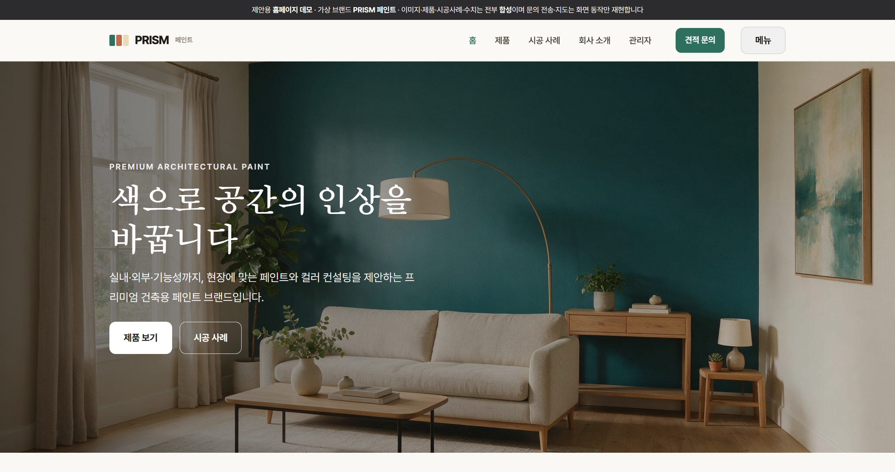
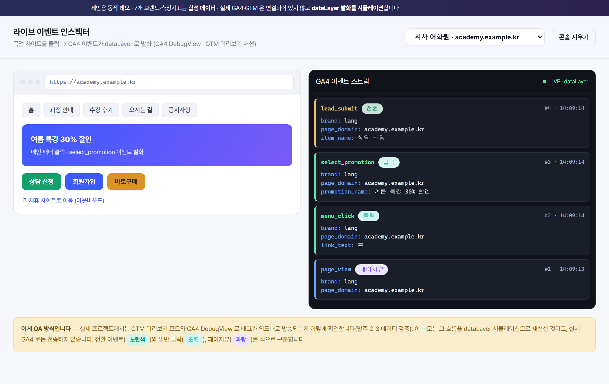
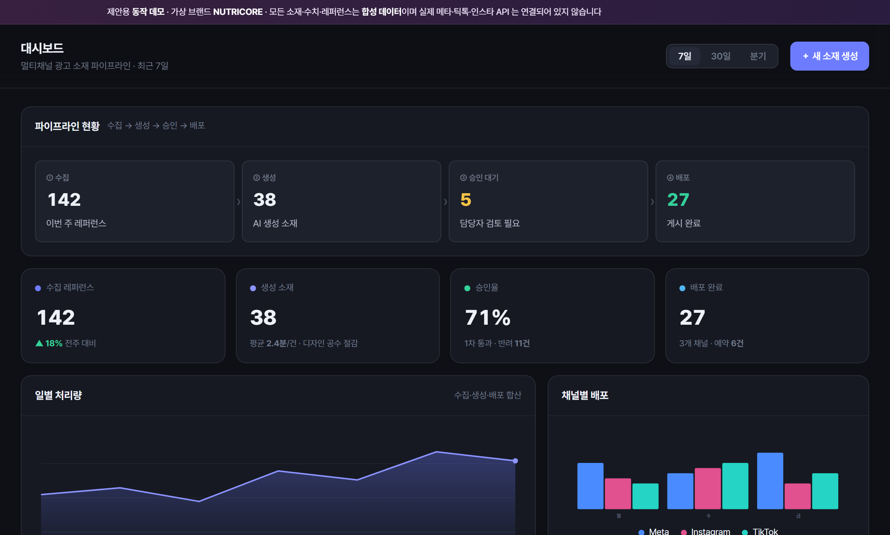
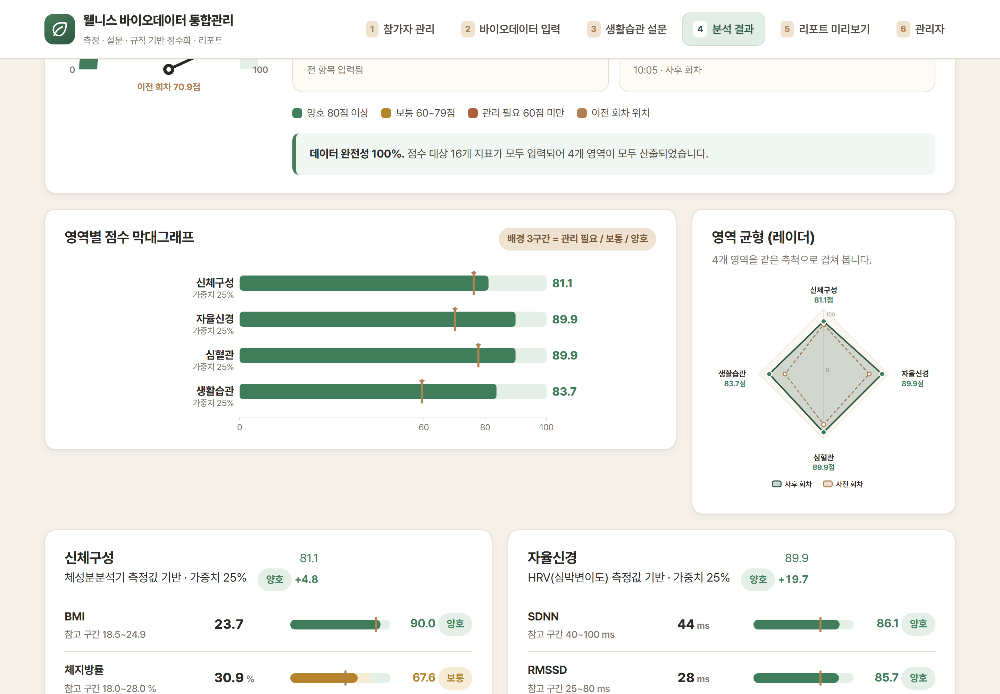
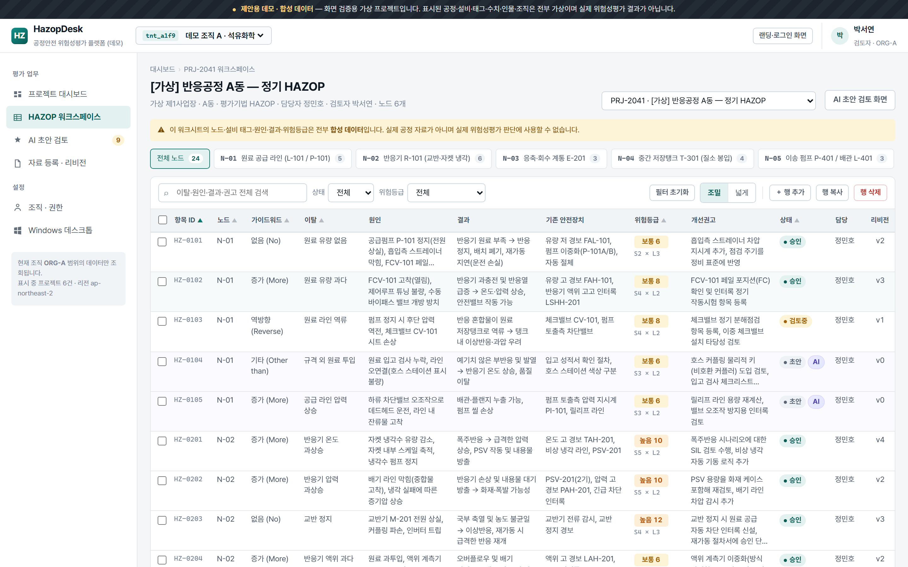
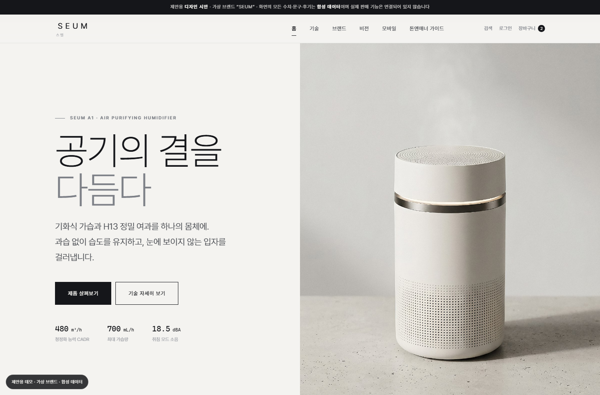

모아보다 — 웹 서비스·대시보드
발주의 세 축 — 크롤링 엔진(스케줄러·중복 방지·딜레이), 반응형 커뮤니티(가입·목록·상세·글쓰기·댓글·좋아요), 관리자 백오피스(수집 상태와 에러 로그·게시글 숨김/삭제·회원 차단) — 을 실제 화면으로 만들어 본 데모입니다. 법적 이슈를 줄이기 위해 수집 콘텐츠는 요약과 원문 링크아웃 형태로만 노출하도록 구성했습니다.
동네한바퀴 — 기업·기관 홈페이지
발주의 3개 모듈(회원·로그인 / 게시글·무한 스크롤·댓글 / AI 신뢰도 점수 연동·표시)을 실제 화면으로 구현해 본 데모입니다. 보유하신 AI 검증 API와 위치 인증은 신규 개발이 아닌 연동 대상으로 두고, 점수 표시 UI와 응답 실패 시 대체 처리까지 화면에 담았습니다.
바이오리브 — 기업·기관 홈페이지
발주의 앱 기능(키트 등록·본인인증·자녀정보·문진표·반송 신청·진행현황·결과 확인)과 관리자 기능(협력사·접수·키트·문진표·반송·결과 업로드·상태관리), 협력사 API 수신·송신 흐름을 실제 화면 구성으로 옮겨 만든 데모입니다. 검사 진행 5단계 상태가 앱과 관리자에서 동일하게 표시되는 구조를 확인하실 수 있습니다.
온세이프 — 기업·기관 홈페이지
발주의 요구대로 보라색 포인트의 다크 테마, 큰 글씨, 신호등 기반 상태 표시, 최소 조작 동선을 적용해 대시보드·설비 상세·설정 화면을 리뉴얼하고, 모바일에서는 푸시 알림 진입·평면도 온도 맵·식약처 리포트 PDF 공유·신호등 점검 뷰까지 화면으로 구현한 데모입니다.
리캡라이브 — 자사몰·커머스
이 데모는 발주의 회차 단위 축적·직전 회차 비교·속보판/확정판 2단계 발행·검증 실패 시 발송 차단·브랜드별 수신자와 발송 이력·스토어별 수집 현황판을 실제 화면으로 구현한 것입니다. 스토어별 독립 프로필 순회와 원본 보관 구조도 화면에 드러나도록 구성했습니다.
세움파트너스 — 기업·기관 홈페이지
발주의 사용자 페이지(기업 소개·공지사항 목록/상세·블로그 목록/상세·접속 팝업)와 관리자 페이지(공지·블로그 CRUD, 팝업 활성·비활성 및 콘텐츠 관리)를 그대로 화면으로 옮겨 만든 데모입니다. 요청하신 React·Next.js·TypeScript·PostgreSQL 스택 기준으로 구성했습니다.
가온평가원 — 기업·기관 홈페이지
발주의 3단계 배정 규칙(동일 지역 → 인접 지역 우회 → 수동 배정 대기)과 위원별 일일 한도 카운터, 배정 요청·당일 현황 조회 API를 그대로 구현해 화면으로 보여주는 데모입니다. 핵심 요구인 피크 시간대 동시 신청 시 한도 초과 차단을 잔여 1 경계 조건까지 재현해 검증 결과를 함께 담았습니다.
세미크래프트 — 기업·기관 홈페이지
발주의 3개 페이지 요구를 그대로 화면으로 구현했습니다 — 회사 소개·연혁 타임라인·조직도, 제품 이미지와 스펙 표기 및 제조 공정 설명, 그리고 이름·연락처·이메일·문의 내용 입력 폼과 지도 영역을 포함한 문의 페이지입니다. 반응형으로 제작해 모바일에서도 동일한 구성으로 확인할 수 있습니다.
애드플로우 — 기업·기관 홈페이지
발주의 5개 기능 영역(광고주·프로젝트 관리, 캠페인 성과, 제작 일정, 정산, 통합 대시보드)을 단일 진입 화면 하나에서 조회하는 구조로 구현했고, 네이버·구글·메타 매체 연동 설정과 매체별 지표 통일·중복 제거 규칙, 광고주별 수수료를 설정값으로 두는 정산 계산, 역할별 조회 범위 제어까지 화면으로 확인할 수 있게 만들었습니다.
하버링크 — 기업·기관 홈페이지
발주의 두 축인 통합 데이터 플랫폼(유형별 확장 필드를 가진 공통 스키마, 신규 등록 자동 검증, 확신도 분류, 90일 재검증, 검토 큐)과 어드민 고도화(인라인 편집, 검증 상태 배지, 다중 일괄 승인·반려, 신규 데이터 추가 워크플로우)를 화면으로 구현한 데모입니다. 기존 읽기 전용 어드민의 조회·검색·필터·CSV 내보내기 동작은 유지한 채 편집 기능을 얹는 방식을 그대로 반영했습니다.
모아폼 — 기업·기관 홈페이지
발주의 핵심 요구인 QR 진입(무로그인) · 모바일 세로 전용 화면 · 문항 전환 애니메이션 · 라디오/체크/주관식 입력 폼 · 응답 일괄 전송 · 관리자 엑셀 다운로드 · 인쇄용 QR 생성까지 실제 화면으로 구현해 둔 데모입니다. 기획안의 문항만 얹으면 바로 현장에 쓸 수 있는 형태입니다.
벤처링크 — 기업·기관 홈페이지
발주의 투자실적 취합 시스템을 FastAPI·React·SQLite 구성으로 재현해 조합별 실적 등록, 엑셀 일괄 업로드, 감독 보고서 서식 자동 채움 등 실제 요구 화면을 구성했고, 진단 항목(아키텍처 계층·스키마 적합성·인증 권한·유지/재구축 판단)을 갤러리로 정리해 자문 산출물의 목차가 어떤 모습일지 미리 보여드립니다.
스튜디오 노브 — 기업·기관 홈페이지
발주의 3개 화면 요구를 그대로 구현했습니다 — 메인은 전체 화면 배경 영상 자동 재생과 스크롤 페이드인/아웃·호버 확대 및 색상 반전, 서브는 썸네일 그리드에서 영상 포함 모달과 새로고침 없는 카테고리 비동기 필터링, 관리자는 포스트 에디터·노출 토글·배경 영상 교체 업로드(용량 제한 알림)·목록 수정/삭제를 갖췄습니다.
예측그리드 — 기업·기관 홈페이지
발주에 적힌 두 모듈을 그대로 구현한 데모입니다 — Aurora(MySQL) 원천 데이터에서 채널별 거래액·수익·미사용 상품권 수익을 산출하는 월 배치 자동화, 그리고 공용 계정 로그인 뒤 연·월을 선택해 결과 목록을 조회하는 단일 페이지 웹입니다. 이관 정확성 확인을 위해 수작업 엑셀 값과의 항목별 대조 화면도 함께 넣었습니다.
광맵 — 기업·기관 홈페이지
발주의 핵심 화면인 지도 기반 기업 조회(마커·클러스터링·정보 팝업·28개 분류 코드 필터)와 관리자 데이터 흐름(엑셀 일괄 업로드·주소 좌표 변환·상장사 API 연동·노출 대상 선별)을 실제 화면으로 구성한 프로토타입입니다. 참고하신 지도 서비스의 직관적인 화면 구성(지도 + 필터 + 목록)을 기준으로 삼았습니다.
먹선스튜디오 — 기업·기관 홈페이지
발주의 화면 구성을 그대로 옮긴 데모입니다 — WORKS(웹툰 4작품·단행본 8종, 단행본은 상세 없이 표지·제목·작가명만), NEWS(카테고리 즉시 필터·상단 고정 2건·페이지네이션), 자유형 본문(이미지 캡션·2단 배치)과 글별 링크 버튼 2개, 진행 중 JOIN US 글이 있을 때만 뜨는 메인 링크까지 동작합니다. 지정 사양(배경 #0d0c0f/#13151a, 포인트 #00c2d1, Pretendard/Archivo, 860px 전환, 표지 145:200·키비주얼 480×623)을 그대로 적용했습니다.
등기다리 — 기업·기관 홈페이지
발주의 과업 범위 ①~④를 그대로 화면으로 옮긴 데모입니다 — 단건·대량 발급 요청, 큐와 자동 재시도, Webhook 결과 전송, PDF 파싱 결과의 JSON 구조화, 실패 건 재실행과 예치금 알림까지 한 흐름으로 구성했고, 브로커 API를 주 경로로 두고 브라우저 자동화를 폴백으로 배치한 이중 구조를 건별 처리 경로 표시로 보여 줍니다.
세담엔진 — 웹 서비스·대시보드
발주의 4개 로직군(소득·세액 계산 / 전자신고 규격 파일 생성 / 자동·수기 판정 / 파라미터 버전 관리)을 모듈 API 단위로 나누고, 요구하신 세 가지 통합 시나리오(단일소득·겸업·수기 분기)와 계산 근거 출력을 실제 호출 결과 형태로 구성했습니다. 화면은 납품 범위가 아니므로, 이 페이지는 입력·출력 계약을 눈으로 합의하기 위한 규격 설명용으로만 만들었습니다.
폼스캔 — 기업·기관 홈페이지
발주의 3대 요구인 스캔본 OCR 자동 추출, 통계 분석(평균·t-검정·ANOVA·정규성 검사), 실시간 리포팅 대시보드를 화면으로 구현했습니다. 특히 문의 댓글에서 쟁점이 된 '손글씨 인식 오류를 담당자가 직접 확인·수정하는 검수 화면'을 신뢰도 기반 우선순위와 원본 대조 편집 형태로 미리 만들어 두었습니다.
여담(旅談) — 기업·기관 홈페이지
발주의 PoC 4개 요구(초대장·프롤로그 생성 / 방문·미션 입력 기반 동화와 페이지별 삽화 생성 / 텍스트·삽화 결합 PDF 전자책 다운로드 / 프롬프트 수정·재실행 테스트 환경)를 각각 화면으로 만들고, 단계별 소요 시간 측정과 아동 부적합 콘텐츠 차단 규칙까지 배치해 파이프라인 전체 흐름을 눈으로 확인할 수 있게 구성했습니다.
초록결 — 기업·기관 홈페이지
발주의 두 갈래(기존 홈페이지 개편 + 교사 전용 B2B) 중 B2B 핵심 흐름을 화면으로 구현한 데모입니다. 교사 가입·고유번호증 제출 → 관리자 승인 → 수량·인원 기반 견적 즉시 계산 → 직인·문서번호가 들어간 견적서 PDF 발행 → 수정 요청과 2차 재발행(회차 전량 보존) → 주문 접수와 청구·결제 기록까지, 요구사항의 상태 흐름을 그대로 따라갑니다.
짐온 — 기업·기관 홈페이지
발주의 화면 15개 구성 중 고객 예약 폼(배송/보관 분기)·로그인 없는 번호 조회·임베드 결제, 관리자 오늘 할 일(목록/지도)·거점 지도·단계별 이탈 통계, 제휴점 전용 링크 현황판을 실제 화면으로 구현한 데모입니다. 4개 언어·모바일 우선·통화별 정액 결제라는 전제를 그대로 반영했습니다.

페인트 브랜드 기업 소개 홈페이지
— 제품 · 시공 사례 · 연락처 · 관리자
페인트 기업의 회사 소개·제품 안내·시공 사례·연락처를 담은 홍보 홈페이지 시안입니다. 제품 필터, 시공 사례 갤러리(유형 필터 + 라이트박스), 견적 문의 폼(필수값 검증)이 동작하고, 관리자 화면에서 제품·시공 사례를 직접 등록·수정·삭제·공개 전환할 수 있습니다(발주 요건). 가상 브랜드 PRISM이며 이미지·제품·수치는 전부 합성입니다. 실제 구축은 아임웹 등 웹빌더 위에 이 구조를 올려 진행합니다.

다중 사이트 GA4·GTM 정밀 추적 환경
— 측정 설계 · 라이브 태깅 검증 · PII 보호
7개 브랜드 사이트의 측정 설계(핵심 전환 정의 · 크로스 도메인)부터, 목업 사이트를 클릭하면 GA4 이벤트가 dataLayer로 실시간 발화되는 라이브 인스펙터(GA4 DebugView·GTM 미리보기 재현), 이벤트 태깅 내역서, 그리고 이름·전화가 GA4로 새지 않도록 마스킹·해싱하는 PII 세이프가드까지 클릭으로 확인할 수 있습니다. 실제 GA4·GTM은 미연동이며 dataLayer 발화를 시뮬레이션합니다. 브랜드·수치는 전부 가상입니다.

멀티채널 광고 소재 자동화 파이프라인
— 수집 → AI 생성 → 승인 → 배포
경쟁사 광고 레퍼런스 수집부터 제품 정보·벤치마킹 기반 AI 소재 생성, 담당자 승인 큐(반려 사유 → 재생성 트리거), 채널별 자동 게시까지 엔드투엔드 흐름이 클릭으로 이어집니다. 승인/반려 상태 전이, Slack·카카오 알림 프리뷰, 채널별 예약 배포가 실제로 동작하고 아키텍처·데이터플로우 문서를 포함합니다. 브랜드·소재·지표는 전부 가상이며 실제 메타·틱톡 API 는 연결되어 있지 않습니다.

체성분·HRV 웰니스 데이터 통합관리
— 측정 → 규칙 기반 점수화 → 리포트
측정값과 생활습관 설문을 입력하면 규칙 기반으로 영역별 점수를 산출하고, 게이지·레이더·막대 차트로 결과를 보여준 뒤 인쇄용 리포트까지 이어집니다. 누락값 처리, CSV 가져오기, 관리자 기준표 편집이 실제로 동작하며 기준을 바꾸면 화면 구간이 즉시 반영됩니다. 의료 진단이 아닌 웰니스 상태 구간(양호·보통·관리 필요)만 표시합니다. 전부 가상 데이터입니다.

공정안전 위험성평가(HAZOP) 워크스페이스
— 초안 제안 → 전문가 검토·승인
표 형태 워크시트에서 셀 편집·행 추가·필터·정렬이 실제로 동작하고, 값을 고치면 리비전이 올라가며 승인본이 자동으로 검토중으로 되돌아갑니다. 초안 배지 → 일괄 승인/반려(사유 필수) 흐름과 역할별 권한 잠금, 조직 전환 시 데이터 분리까지 클릭으로 확인할 수 있습니다. 전부 가상 공정·수치입니다.

하이엔드 가전 자사몰 디자인 시안
— 촬영 톤앤매너 가이드 포함
가상 브랜드 기준으로 메인·기술·브랜드·비전 페이지를 미니멀 톤으로 구성하고, 성능 데이터는 그래프로 실제 렌더했습니다. 별도 톤앤매너 가이드 문서에서 실험실·야외 촬영컷의 조명·구도·소품 기준을 레퍼런스 위 주석 오버레이로 제시하고, 컷 리스트·보정 기준·이미지 규격까지 정리했습니다. 브랜드·수치는 전부 가상입니다.

청년-지역 매칭 플랫폼
— 공고 · 지원 · 선발 확정 원스톱
발주의 핵심 목표가 "공고 등록 → 지원 → 선발 확정이 원스톱으로 처리"였습니다. 그래서 화면이 아니라 플로우가 실제로 도는 것을 만들었습니다. 청년으로 지원하면 관리자 목록에 즉시 뜨고, 합격 처리하면 마이페이지와 성과 통계에 바로 반영됩니다. 직접 클릭해 보실 수 있습니다.

B2B 솔루션 기업 웹 퍼블리싱
— FAQ · 프로그램 소개
정적 웹페이지 신규 퍼블리싱 발주의 요구사항대로 제작. 지정 브랜드 가이드(메인 컬러·Pretendard·1280px 기준)를 그대로 적용하고, 아이콘 기반 카테고리 UI와 카테고리 분류 + 정적 아코디언 FAQ 를 구현했습니다. PC · 태블릿 · 모바일 3단 반응형.

의류 사이즈 핏 추천 위젯
— 임베드 · 추천 → 장바구니 연동
쇼핑몰 상품 페이지에 삽입되는 사이즈 추천 위젯입니다. 체형 정보를 입력하면 룰 기반으로 추천 사이즈와 참고용 신뢰도를 안내하고, 추천 결과가 상품 페이지 사이즈 선택에 바로 반영됩니다. 위젯은 iframe으로 스타일을 격리했고, 마이페이지·어드민 집계까지 하나의 흐름으로 동작합니다. 전부 가상 데이터이며 직접 클릭해 보실 수 있습니다.